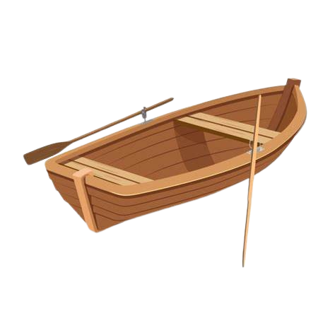

O que é?
.........................................................................
Canoagem de mar é uma nova variante da canoagem cujo objetivo é cumprir determinados percursos em mar aberto, com largada e chegada em locais distintos...
Vantagens
......................................................................................
A canoagem é uma atividade ao ar livre que permite exercitar o corpo, ganhar coordenação, estabilidade e força...
Regras
.........................................................................
PERCURSO:
.................................................................
- O percurso deverá ser em águas marinhas, completamente navegáveis em distância superior a 10 km;
- A largada normalmente é dada em terra...
EQUIPAMENTO:
- É vedada a participação de caiaques utilizados em provas de Velocidade, Maratona e Descida;
- É permitida a utilização de bússola, bomba para escoamento de água e remos reservas...
CONDUTA:
- Todo o atleta em competição é obrigado a ajudar qualquer atleta em perigo;
- Nenhum atleta pode agarrar a embarcação do adversário...